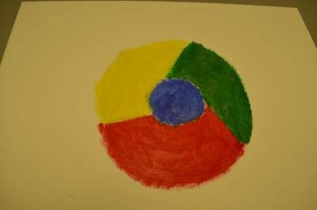
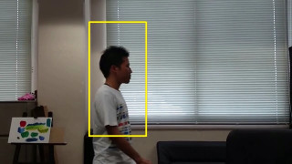

H26年度
H26年度は3名の学生が配属されました。研究内容は以下の通りです。青木塁: 色の知覚差を考慮したカラー画像のモノクローム変換
左：原画像，中：輝度によるモノクロ化，右：提案法
ディジタル画像はカラーのものが多いが，それを印刷したり画像処理をする場合は，モノクローム（以下モノクロ）に変換することがある． これは，印刷にかかるコストを抑えたり，画像処理を効率よく行うためである． また，モノクロ画像は視覚異常の人でも問題なく区別することができ，視覚バリアフリーの実現例でもある．
しかし，24bitフルカラー画像を8bitモノクロ画像に変換すると，保存できる情報量は65536分の1になってしまう． そのため，モノクロ変換の際に本来存在する色の知覚差がなくなり，正確に情報が伝わらないという問題が起こりうる． そこで本研究では，各色間の知覚差（色差）を可能な限り保ちながら，モノクロ空間に配置するアルゴリズムを提案し，カラー画像での色の違いができるだけ表現できるモノクロ変換を実現することを目的とした．
カラー画像での色差を，モノクロ画像における色差，すなわち濃度差に対応付けることができれば，色の違いを表現することができる． しかし，色差は三次元空間の距離，濃度差は一次元空間の距離に相当するため，その距離すべてを維持するのは不可能である． そこで，変換前後における知覚差の誤差に対して最小二乗法を用いる方法を考案した． また，色差だけを維持すると輝度の情報が失われてしまうため，変換後の濃度パターンが人間の明るさに対する感覚と一致しないという問題が起こりうる． この点を考慮して，初期配置を変換前の輝度の順序とし，そこから誤差が最小になるように各画素の濃度を変化させた．
最小二乗法による色差変換では，各画素間の濃度差をバランスよく保つ配置をすることはできるが，写真のように使用されている色数が多い画像だと，異なる色相でも区別ができなくなってしまうことが分かった． そこで改善案として，クラスタリングを用いて代表色を抽出し，変換する色数を減らすことを考えた． また，変換後の代表色から元のグラデーションを復元することで，画像全体のモノクロ変換を実現した．
クラスタリングを用いた色差変換では，色相の違う箇所で濃度差を広げることができた． さらに，グラデーションを復元したことで，視覚的にも問題なく，輝度変換よりも色の区別が可能な変換を実現することができた． しかしクラスタリングを行ったため，オブジェクト内での滑らかなグラデーションは表現できるが，輝度変換のような画像全体での滑らかなグラデーションは表現できず，色が大きく変化する境界で画像が荒れる現象が起きてしまった．
阿部凌磨: 油彩画を対象とした色再現シミュレーション

蛍光灯の下での色の見え方

白熱電球の下での色の見え方
電気工学技術の発展やエコ志向の高まりにより，蛍光灯，白熱電球に加え有機ELやLEDなど多様な照明が普及してきた．このような照明の中には 人間の目で直接観測したときは同じ色に見えても，物体に反射した際には演色性などの特性の違いにより 違う色に見えてしまうことも少なくない． このような特性の違いの影響を強く受けるものとして絵画が挙げられる．
例えば，太陽光のもとで絵画を作成したとして，展示場所の照明が白熱電球の照明だったとき，色味が違って見えてしまうことがある．
また，絵画を購入する際，店舗の照明と展示場所の照明の違いにより，見え方が変わってしまうという問題も挙げられる．
そこで本研究では，様々な照明環境下でどのように色が見えるかをシミュレーションし，油彩画を作成または購入を支援することを目指した．
人間が知覚する色をシミュレーションするには，光源の各波長ごとの光強度・物体の各波長ごとの反射率・人間の視覚特性 といった3つの要素が必要となる． 光源の光強度，人間の視覚特性はCIE(国際照明委員会)の実験により求められているため，絵具の反射率を測定し，人間が実際に知覚する色をシミュレーションした．
桾沢優希: 動画サマライゼーションを目的としたシーン分析方法の基礎的検討
オプティカルフロー計算例

トラッキング例
テレビなどを録画した動画は長時間なものになってしまうことが多く，それらにおいては不必要なシーンも多数存在してしまう． この不必要なシーンは動画の各シーンを要約し，必要な部分だけを抽出することで解決できると考えられる．
動画の各シーンを要約する上で重要になる技術の一つがオプティカルフロー(Optical Flow)である． オプティカルフローは画像上のある点における動きを表した速度ベクトルである． その速度ベクトルが大きければ大きく移動したということがわかり,ベクトルの大きさが0であれば動画像内のその点において運動をしていないということがわかる． これを用いることで動画において動きが激しい部分を抽出するといったことの他に，動画内において対象物の移動をトラッキングしたり，運動方向の変化を検出することができる．
本研究では正確なオプティカルフローを計算量を抑えながら求められるような改善方法を検討し，動画の必要な部分を抽出できるようなアプリケーションとして実装を行った．